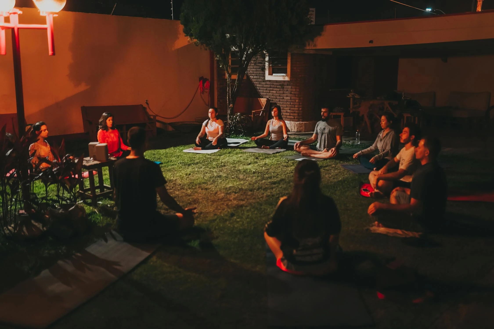

"Yoga is the journey of the self, through the self, to the self." – The Bhagavad Gita
Yoga is an ancient practice that originated in India thousands of years ago. It involves a combination of physical postures (asanas), breathing techniques (pranayama), meditation, and ethical principles that aim to unify the body, mind, and spirit. The practice of yoga has many different styles and schools, ranging from physically demanding forms like Ashtanga and Vinyasa to more meditative and restorative practices like Hatha, Iyengar, and Yin Yoga. At its core, yoga seeks to promote balance, flexibility, strength, and mental clarity, ultimately fostering a sense of inner peace and connection to oneself and the world.
Hatha yoga is a gentle form of yoga that focuses on physical postures (asanas) and breathing techniques (pranayama). It is a great way to improve flexibility, strength, balance, and overall well-being.
Vinyasa yoga is a dynamic style of yoga that links breath to movement. It is a great way to build strength, flexibility, and endurance. It can also help improve focus and reduce stress.
Ashtanga yoga is a physically demanding style of yoga that follows a specific sequence of postures. It is a great way to build strength, flexibility, and mental focus. It can also help to purify the body and mind.
Iyengar yoga emphasizes precise alignment and the use of props to help students achieve the correct postures. It is a great way to improve flexibility, strength, and balance.
Kundalini yoga is a spiritual practice that aims to awaken the energy at the base of the spine. It involves a combination of physical postures, breathing techniques, meditation, and chanting.